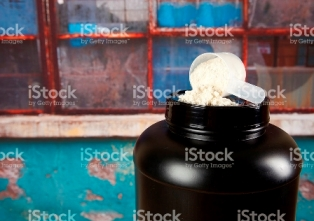
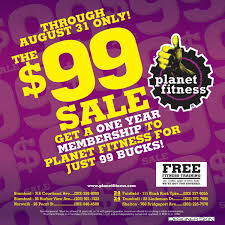
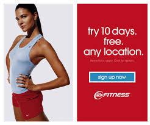

Protein links


Planet Fitness

LA Fitness
Below is explaination regarding when to use protein for working out. Protein is not just for people who want to get big or gain more muscle, but to also those who want to lose weight. It is important that youn really understand protein before you start changing your diet to your needs.
Think big. Most adults would benefit from eating more than the recommended daily intake of 56 grams, says Donald Layman, Ph.D., a professor emeritus of nutrition at the University of Illinois. The benefit goes beyond muscles, he says: Protein dulls hunger and can help prevent obesity, diabetes, and heart disease. ADVERTISING inRead invented by Teads
How much do you need? Step on a scale and be honest with yourself about your workout regimen. According to Mark Tarnopolsky, M.D., Ph.D., who studies exercise and nutrition at McMaster University in Hamilton, Ontario, highly trained athletes thrive on 0.77 gram of daily protein per pound of body weight. That's 139 grams for a 180-pound man.
Men who work out 5 or more days a week for an hour or longer need 0.55 gram per pound. And men who work out 3 to 5 days a week for 45 minutes to an hour need 0.45 gram per pound. So a 180-pound guy who works out regularly needs about 80 grams of protein a day.
Now, if you're trying to lose weight, protein is still crucial. The fewer calories you consume, the more calories should come from protein, says Layman. You need to boost your protein intake to between 0.45 and 0.68 gram per pound to preserve calorie-burning muscle mass.
And no, that extra protein won't wreck your kidneys: "Taking in more than the recommended dose won't confer more benefit. It won't hurt you, but you'll just burn it off as extra energy," Dr. Tarnopolsky says.
Many foods, including nuts and beans, can provide a good dose of protein. But the best sources are dairy products, eggs, meat, and fish, Layman says. Animal protein is complete it contains the right proportions of the essential amino acids your body can't synthesize on its own.
It's possible to build complete protein from plant-based foods by combining legumes, nuts, and grains at one meal or over the course of a day. But you'll need to consume 20 to 25 percent more plant-based protein to reap the benefits that animal-derived sources provide, says Dr. Tarnopolsky. And beans and legumes have carbs that make it harder to lose weight.
So if protein can help keep weight off, is a chicken wing dipped in blue-cheese dressing a diet secret? Not quite: Total calories still count. Scale down your fat and carbohydrate intake to make room for lean protein: eggs, low-fat milk, yogurt, lean meat, and fish.
But remember, if you're struggling with your weight, fat itself is not the culprit; carbs are the likely problem. Fat will help keep you full, while carbs can put you on a blood-sugar roller coaster that leaves you hungry later.
"At any given moment, even at rest, your body is breaking down and building protein," says Jeffrey Volek, Ph.D., R.D., a nutrition and exercise researcher at the University of Connecticut. Every time you eat at least 30 grams of protein, Layman says, you trigger a burst of protein synthesis that lasts about 3 hours.
But think about it: When do you eat most of your protein? At dinner, right? That means you could be fueling muscle growth for only a few hours a day, and breaking down muscle the rest of the time, Layman says. Instead, you should spread out your protein intake.
Your body can process only so much protein in a single sitting. A recent study from the University of Texas found that consuming 90 grams of protein at one meal provides the same benefit as eating 30 grams. It's like a gas tank, says study author Douglas Paddon-Jones, Ph.D.: "There's only so much you can put in to maximize performance; the rest is spillover."